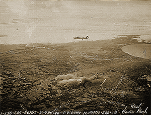

|
j
a v a s c r i p t |
January 7, 1945

Grace Park Airfield
Manila this morning received its first taste of light Carpet Bombing at the hands of 25 black B-24s. They arrived in two formations of 19 and 6 planes, 2 minutes apart, from the same direction as yesterday. They circled Grace Park, went away, and returned shortly. We didn't know what was happening until the bombs rocked our house. The sound was a continuous roar, as if someone had fired a gigantic machine gun. F6Fs were right on hand to finish off anything suspicious, and are now at work on the other airfields. Tribune: "2 carriers, 1 battleship sunk west of Panay" — on the evening of January 5 by the 'Issei' kamikaze group. Four planes "instantaneously sank" the three ships. I guess that's as big a Japanese lie as any. The task force is heading north off San Fernando in La Union. "Army Defense Commander issues Warning against Untoward Acts; City's Welfare Fully Considered." Japanese forces will see to it that law-abiding inhabitants will not suffer, but if Manilans don't behave "properly," they'll pay a "heavy penalty." The curfew now runs from 2100 to 0500. Military Governor Guinto's new instructions: Thou shall not, in effect, disturb, steal, damage or help air parachutists or fallen pilots, not get together as a group of persons before the curfew hours and after sunset, and continue the evacuation of the city as fast as possible. A classic headline: "Reappearance of U.S. Task Forces Reveals Foe's Anxiety." Just who is anxious? News: The Americans landed unopposed at Marinduque Island, and are expected to land in the Lingayen Gulf — the northernmost beaches of Luzon. Zero hour is approaching for the Philippines. It's obvious why the B-24s chose to hit Grace Park. It's the city's northernmost airfield and right by the north road where Japanese supplies have to go through. Meanwhile, the sabotage continues in the city — about 20 to 30 explosions a day and even a few at night. The Bachrach Motor Company (Nash) and the Manila Trading and Supply Company (Ford) are gone. |
|
|
|
|